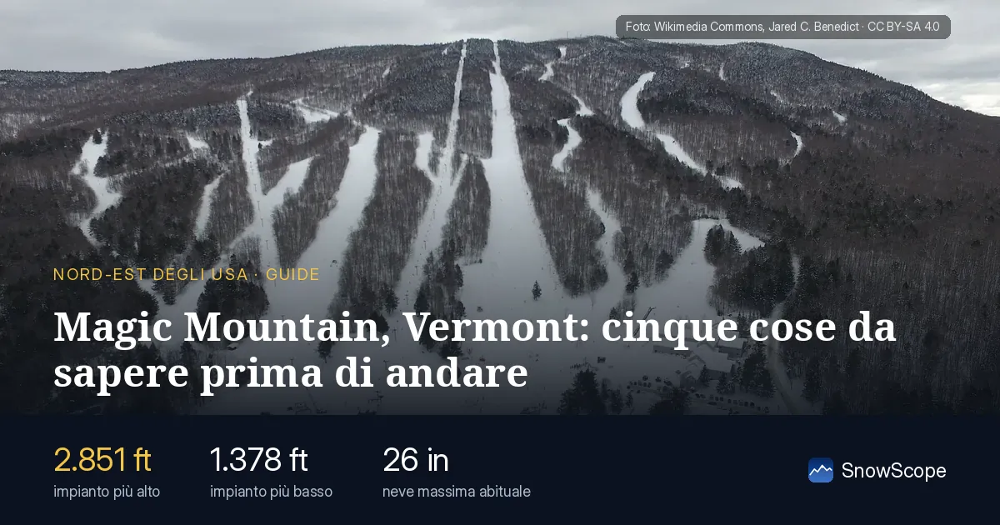

Magic Mountain, Vermont: cinque cose da sapere prima di andare
Magic Mountain è il tipo di comprensorio che la gente descrive con affetto piuttosto che con statistiche: indipendente, ripido per le sue dimensioni, e ne va orgoglioso. Si trova a Londonderry, nel Vermont meridionale.
Le previsioni neve in tempo reale per Magic Mountain Ski Area nell'app SnowScopeAltezza neve, allerte powder e mappa 3D, gratis.

1. La neve naturale è scarsa qui, quindi segui le tempeste
Il Vermont meridionale non è una regione di neve profonda. In vetta, 869 m, il picco stagionale usuale è solo circa 67 cm, e alla base, 420 m, circa 54 cm. Gli inverni variano molto: il più magro nel nostro archivio ha raggiunto circa 14 cm, il più abbondante vicino alla vetta circa 116 cm. L'innevamento artificiale copre circa metà del terreno, quindi le piste preparate funzionano più spesso di quanto questi numeri suggeriscono; per i boschi, hai bisogno di neve naturale.
Il miglior piano è andare nei giorni subito dopo una buona tempesta. Questo tempismo conta più a Magic Mountain che nei grandi comprensori con più cannoni e terreno. Quando cade neve naturale, fa la differenza tra una buona giornata e una straordinaria, specialmente nelle gole dove la neve si attacca più a lungo all'ombra.

2. Le gole ripide sono il punto forte
Magic Mountain ha la più estesa rete di sci tra gli alberi nel Vermont meridionale, con pendenze che raggiungono i 45 gradi, su un dislivello di circa 1.500 ft da una base a 1.350 ft a una vetta a 2.850 ft. Ci sono 39 piste su 205 acri. Per sciatori esperti questa è l'attrazione; per principianti, c'è meno qui che nei grandi comprensori vicini, quindi scegli le lezioni e le piste facili con cura.
Le gole ti ricompensano con protezione dal vento e neve più morbida che dura più a lungo in primavera. Nei giorni di neve scarsa, le piste aperte possono essere rasate, ma i boschi rimangono praticabili. Per questo gli sciatori esperti continuano a tornare.
3. Dicembre è rischioso; febbraio e marzo sono migliori
Vicino alla vetta un inverno tipico ha circa 14 cm in dicembre, 28 cm in gennaio e circa 43 cm in febbraio, poi circa 42 cm in marzo. I viaggi a dicembre dipendono dall'innevamento artificiale e dalle notti fredde; c'è poco margine se il tempo si riscalda. Alla base, i numeri sono ancora più stretti: solo 1 cm è usuale in novembre, 2 a 11 cm in dicembre.
Febbraio e inizio marzo danno ai boschi la loro migliore chance. La migliore singola settimana del nostro archivio, in inizio marzo, ha almeno 50 cm in vetta nella metà di tutti gli inverni. Verso fine inverno, la base ha 2 a 31 cm accumulati, e la vetta spesso si trova sopra i 127 cm. Questo è quando dovresti prenotare il tuo viaggio.
4. Goditi la Red Chair almeno una volta
La Red Chair è una seggiovia biposto costruita nel 1971, lenta e un po' fredda, e parte dell'identità del comprensorio. Dal 2020 il Black Line Quad offre un secondo modo per salire. In una giornata fredda e ventosa, vestiti per una lunga salita: una protezione per il viso e guanti caldi fanno una grande differenza.
Il vento conta più del termometro sul lato esposto della montagna. Un bandana per il collo o un passamontagna e un casco che copre le orecchie mantengono la tua pelle al sicuro. Metti scaldamani chimici e guanti di ricambio in uno zaino piccolo; i guanti bagnati si congelano sulla seggiovia, e un paio asciutto a pranzo rende il pomeriggio possibile.
5. La neve qui è rimasta stabile
L'istruttore di sci e filmmaker svizzero Hans Thorner ha fondato l'area perché il terreno gli ricordava le Alpi a casa. Il comprensorio ha chiuso nel 1991, ha riaperto nel 1997, e ha lottato attraverso diversi proprietari prima che Ski Magic LLC lo riaprisse a fine dicembre 2016. Piccoli comprensori come questo sopravvivono sui loro regolari e sul loro terreno ripido.
Nel nostro archivio la sua neve non ha declinato. La mediana di picco vicino alla vetta era circa 54 cm nei nostri primi quindici inverni e circa 63 cm negli ultimi quindici. L'inverno passato, 2025-26, era circa normale a circa 66 cm. Questa stabilità è rara nel New England meridionale e testimonia la posizione del comprensorio nelle Green Mountains.
Cosa portare a Magic Mountain
Strati base sottili e ad asciugatura veloce (lana o sintetico, mai cotone) ti mantengono asciutto durante il giorno e regolano il calore sulla seggiovia. Uno strato intermedio caldo e una shell impermeabile al vento intrappolano il calore e bloccano il vento che conta più del termometro. I layer ti permettono di aprire sulla lunga discesa e chiudere di nuovo sulla seggiovia.
Porta occhiali con lente per la scarsa luce; le giornate grigie sono comuni nel Vermont. Una seconda lente o un paio di occhiali da sole aiuta nelle giornate di sole primaverile. Fai affilare i tuoi spigoli prima del viaggio, o noleggia sci che sono stati revisionati di recente. Con un manto nevoso più sottile, uno sgelo e un congelamento trasformano la superficie rapidamente, e spigoli affilati fanno la differenza tra il controllo e lo slittamento.
Consigli per sciatori
- Vai nei giorni subito dopo una buona tempesta, specialmente per le gole. La neve naturale è scarsa qui e si scioglie velocemente.
- Prenota il tuo viaggio per febbraio o inizio marzo. Dicembre dipende dall'innevamento artificiale; fine inverno dà ai boschi la migliore chance.
- Vestiti in strati e porta una protezione per il viso, guanti caldi e scaldamani chimici. Il vento sulla Red Chair può essere feroce.
- Porta occhiali per la scarsa luce e una seconda lente per giornate luminose. La superficie della neve si indurisce velocemente quando è sottile.
- Controlla il bollettino ufficiale delle valanghe su avalanche.org prima di andare fuori pista, e conferma che il comprensorio è aperto il giorno in cui prevedi di visitarlo.
Su questi numeri
Le altezze neve delle località sono la neve più alta sui pendii superiori alla data indicata; sono stime per un'area, non una misura in un punto. Le previsioni possono cambiare. Leggi sempre il bollettino valanghe ufficiale prima del fuoripista.
Bollettini valanghe ufficiali: avalanche.org (US national portal)
Cita questo articolo
Per ricerca, didattica o stampa: numeri e grafici sono liberamente riutilizzabili con licenza CC BY 4.0 citando così.
SnowScope (2026), Magic Mountain, Vermont: cinque cose da sapere prima di andare, https://snowscope.app/blog/it/2026/11/magic-mountain-vermont-five-things-before-you-go.html, consultato il 2026-11-09
SnowScope (Atlas Labs). (2026, November 9). Magic Mountain, Vermont: cinque cose da sapere prima di andare. SnowScope snow reports. https://snowscope.app/blog/it/2026/11/magic-mountain-vermont-five-things-before-you-go.html
BibTeX
@misc{snowscope2026magicmountainvermontfive,
author = {{SnowScope (Atlas Labs)}},
title = {Magic Mountain, Vermont: cinque cose da sapere prima di andare},
year = {2026},
month = nov,
howpublished = {\url{https://snowscope.app/blog/it/2026/11/magic-mountain-vermont-five-things-before-you-go.html}},
note = {Published 2026-11-09 16:24 UTC; accessed 2026-11-09}
}· CC BY 4.0 · Metodi, dati e strumenti →
Magic Mountain Ski Area: neve e temperatura per quota, quest'inverno vs lo scorso (strumenti) →
Segui Magic Mountain Ski Area
Gratis: un messaggio quando arriva la neve e il meteo ogni mattina.